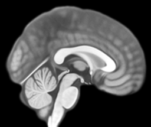

The sharing card, at its true size of 1200 × 630 — the ratio link previews crop to. The scans are real slices of the MNI152 template the site ships, cut by scripts/make_social.py and put under the standard greyscale; the ring is the flow state as the Network Atlas draws it. Rendered to assets/social-card.jpg, which every page points at for og:image.